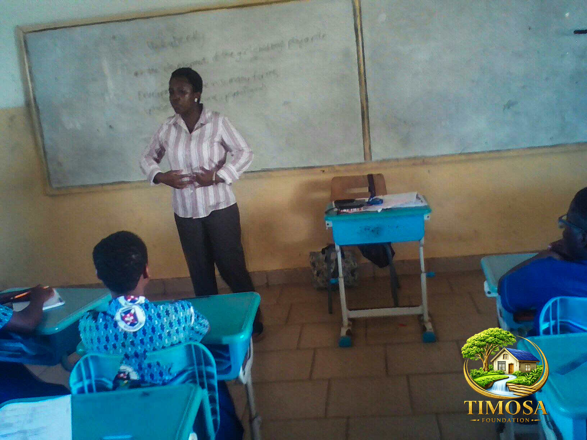
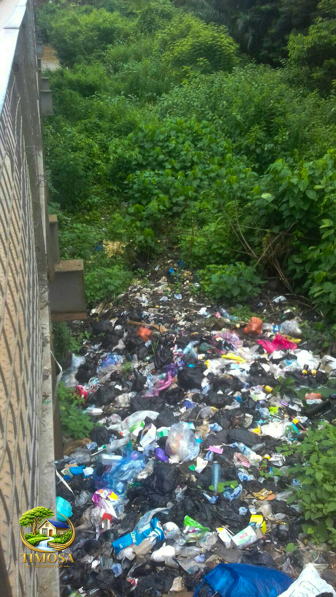

TIMOSA Foundation implements impactful programs that empower communities through quality education, improved healthcare, environmental sustainability, and inclusive community development.
At TIMOSA Foundation, our programs are centered on protecting the environment while improving the quality of life for communities. We educate people on sustainable environmental practices, promote healthy living through cleaner environments, and implement conservation initiatives that safeguard natural resources for future generations.
Empowering children, youth, schools, and communities with knowledge and practical skills to protect the environment through climate education, biodiversity awareness, sustainable waste management, and responsible use of natural resources.
Promoting healthier communities by addressing the relationship between environmental quality and human well-being through clean water initiatives, sanitation, pollution prevention, hygiene education, and awareness of environmental health risks.
Conserving ecosystems through tree planting, reforestation, biodiversity protection, climate action, ecosystem restoration, and community-led conservation initiatives that preserve the environment for present and future generations.

TIMOSA Foundation believes that protecting the environment begins with education. Our Environmental Education Program equips children, young people, schools, and communities with the knowledge and skills needed to become responsible environmental stewards. Through awareness campaigns, practical learning experiences, and community engagement, we inspire individuals to make environmentally responsible choices in their daily lives.
By promoting environmental literacy, climate awareness, and sustainable living practices, we help communities understand the importance of protecting natural resources for present and future generations.

TIMOSA Foundation recognizes the strong connection between a healthy environment and healthy people. Poor sanitation, polluted water, improper waste disposal, and environmental degradation significantly increase the risk of disease and reduce community well-being. Our Environmental Health Program promotes healthier living through clean surroundings, safe water, improved sanitation, and public health education.
Working closely with local communities and stakeholders, we encourage preventive health practices that protect both people and the environment, helping families live healthier and more sustainable lives.

Environmental conservation is at the heart of TIMOSA Foundation's mission. We work with communities, schools, institutions, and partners to restore degraded ecosystems, increase climate resilience, and protect natural resources through practical environmental solutions.
Our conservation initiatives encourage active community participation in tree planting, biodiversity conservation, clean water protection, waste management, and climate action to ensure a healthier and more sustainable future for generations to come.
Every project we undertake contributes towards healthier communities, better education, improved healthcare, and a sustainable environment.
Individuals directly benefiting from our education, health and environmental programs.
Supporting ecosystem restoration, biodiversity conservation and climate action.
Improving access to safe drinking water and sanitation facilities.
Working with schools, communities, youth groups and local partners.
Every initiative follows a structured, transparent and community-driven approach to ensure sustainable impact.
We identify community needs through stakeholder engagement, surveys, and environmental assessments.
We develop practical and sustainable solutions tailored to each community.
Residents, volunteers and partners actively participate in implementation.
We continuously monitor progress, measure impact and improve outcomes.
Whether you are an individual, volunteer, corporate organization, donor or development partner, your support enables TIMOSA Foundation to expand its education, health and environmental programs and transform more lives.